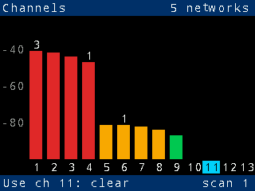
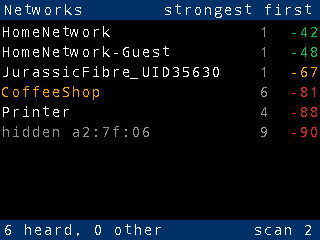

Pico W network meter
Shows how crowded each 2.4 GHz Wi-Fi channel is, so you can pick the best channel for your router.
Buttons
| A | Next screen |
|---|
| B | Previous screen |
|---|
| X | Scan now |
|---|
| Y | Not used |
|---|
LED
| Blue | Scanning |
|---|
| Green | Recommended channel is clear |
|---|
| Amber | Recommended channel is moderately busy |
|---|
| Red | Even the best channel is busy |
|---|
| Magenta | Last scan failed (retried in 2 s) |
|---|
Channels screen

- Bar height: signal reaching the channel, including spill-over from neighbours up to 3 channels away.
- Colour: green clear, amber moderate, red busy.
- Number above a bar: networks on that channel.
- Highlighted channel: the one to use, the quietest of 1, 6 and 11. The footer names it: "Use ch 11: clear".
Networks screen

- Strongest first: name, channel, signal in dBm (closer to 0 is stronger).
- Bar: green good (≥ −60), amber fair (≥ −75), red weak.
- Names in amber are open networks (no password).
Fading
A network stays at full brightness for 15 s after it was last heard, then fades and is gone by 30 s. Dim bars and rows are old data. A network that is heard again is bright again straight away.
Good to know
- Scans run every 10 s. Press X after moving to a new spot.
- Measure where you use Wi-Fi, not next to the router.
- 2.4 GHz only: the Pico W cannot hear 5 GHz networks.
- Keep it away from USB 3 hubs: their noise drowns out all but the strongest networks. Use a long cable or a USB charger.
- Serial log: over the Pico's USB socket,
/dev/cu.usbmodem… on a Mac (screen /dev/cu.usbmodem<N> 115200).